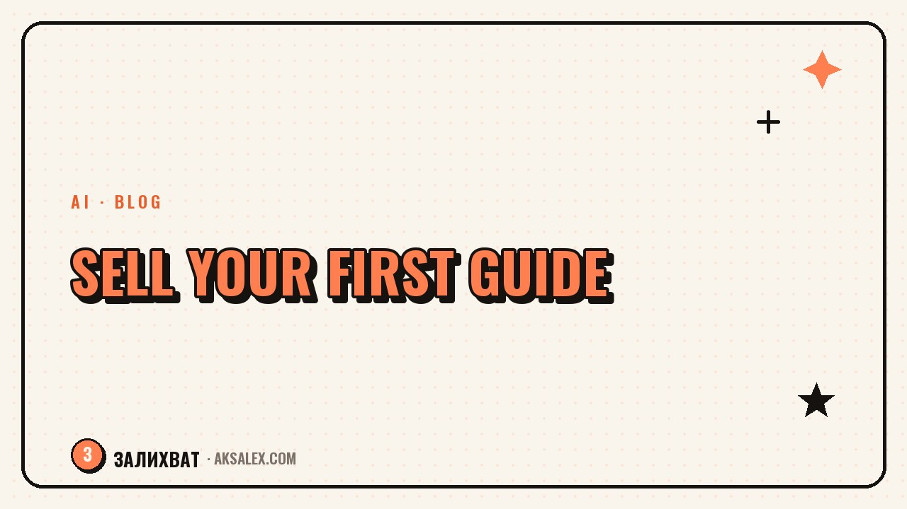

How to Create and Sell a Guide with AI

Why a blogger should make a guide at all
A guide answers a specific audience question here and now. Someone isn't ready to buy your consultation or course, but they're ready to pay a small amount for a set of instructions that solves one of their problems in 15-20 minutes of reading.
The second upside is that it's the first step toward trust. After buying a guide, a person sees how you explain things, structure your thoughts, and keep a promise. If the guide is useful, it's easier to offer a more expensive product next.
- A guide tests demand cheaply and quickly
- It builds a base of first buyers
- It doesn't require filming and editing video
- You can update it and sell it again
Where to start: the topic and the audience's pain point
A good guide answers one specific question rather than trying to cover the whole topic at once. Look at what people most often ask in comments and messages - those are ready-made topics already validated by demand.
How to narrow the topic
Take a broad area of your expertise and split it into small tasks. Not 'a guide to AI,' but 'how to build a month's content plan in one evening with AI.' The tighter the wording, the clearer it is what someone is paying for.
A guide doesn't sell the volume of knowledge, it sells the speed of the result. People pay for not having to figure it out themselves.
How AI helps build the structure and text
AI is good at the routine: laying out a step-by-step plan, suggesting section headings, pulling rough notes into coherent text. Your job is to give it the facts and your experience, not to ask it to invent a story from scratch.
A workflow that works: first dictate or write out all your experience on the topic in your own words, without structure. Then ask the AI to break it into logical steps and suggest headings. After that, reread it and cut anything that doesn't sound like your voice.
- The rough draft in your own words - no editing
- Structure and headings - with AI's help
- The final proofread - always by hand
- Examples and numbers - only real ones, your own
| Stage | What you do | What the AI does |
|---|---|---|
| Idea | Define the audience's pain point | Suggests heading options |
| Structure | Select the important steps | Assembles a plan from your notes |
| Text | Write the examples and experience | Tidies up the wording |
| Review | Proofread for a natural voice | Finds repetition and filler words |
Layout: cover and formatting without a designer
A guide doesn't need complex design, it needs readability. One font for headings, one for the body, enough breathing room between blocks, and clear step numbering - that's enough for a tidy look.
For the cover, use AI tools that generate images from a text prompt, or an accessible editor with a ready template. The key is a large heading that reads on a small thumbnail, and one bright accent color.
What must be inside
- A table of contents on the first or second page
- A short intro: who the guide is for and why
- Numbered steps instead of a wall of text
- A final checklist at the end
How to put the guide up for sale
You don't need a separate website to start. A product page in an existing payment service works - you pin its link in your profile and send it to people who showed interest in the topic before.
Describe the result, not the contents. Instead of '20 pages about content planning inside,' write 'in an hour you'll have a ready month of posts planned out.' People care about the outcome, not the page count.
The first batch of sales often comes not from random buyers but from people who've already read your posts and asked similar questions. Message them personally or make a couple of posts announcing it before the launch.
Common mistakes when launching a guide
The most common mistake is dragging out publication while polishing the text to perfection. A guide can and should be updated after the first feedback, rather than waiting for the moment when everything is flawless.
- A topic too broad, with no specific result
- Text the AI didn't adapt to your style
- No price at launch - 'I'll think about it later'
- No feedback from the first readers
If the same questions keep coming after the first sales, add answers to them in the next version of the guide. That way the product gets stronger with every update.
Frequently Asked Questions
How many pages should a guide have?
As many as it takes to close one specific question. That could be 8 pages or 25 - the length is set by the topic, not by a wish to make the document look weightier.
Can I write a guide entirely with AI?
Not if you want it to sound like you and build trust. AI is great for structure and rough assembly of the text, but the experience, examples, and final voice should be yours.
How do I know whether a guide topic will actually sell?
Look at the questions people have already asked you several times in comments and messages. If a topic keeps coming up again and again, demand for it is already confirmed.
Do I need a separate website to sell a guide?
Not at the start. A product page in a payment service and a link you place in your profile and posts is enough.
What should I do if almost no one buys the guide after launch?
Check how the result is worded in the description and show the guide to people who've already shown personal interest in the topic. Often the issue isn't the product but the fact that the people who need it never heard about it.
Enjoyed this one? Here's what to read next. We break down where to begin monetizing a blog when you still have few followers and brand deals are a long way off.
Read the article →not by hand